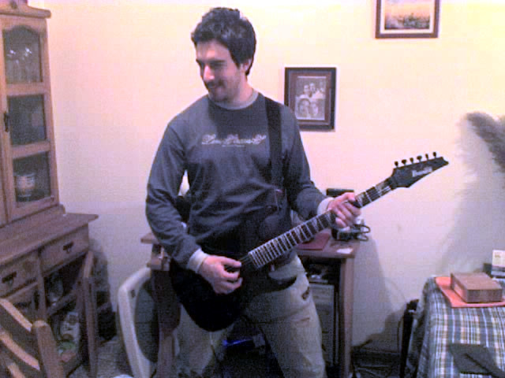
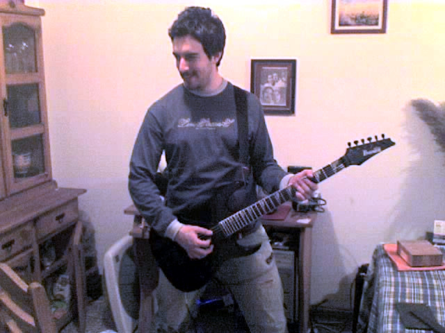

Infancia
Nací el 22 de septiembre de 1979, en Jesús María, un pueblo pequeño, ahora ya ciudad, a 50 km de Córdoba, una de las
capitales más importantes de Argentina...
Tengo 5 hermanos, aunque por aquella época sólo éramos 3, yo soy el del medio. Luego llegarían algunos más... Mis padres se separaron
cuando era muy pequeño, pero gracias a mi abuela materna, tuve una infancia muy feliz.
tuve una infancia muy feliz.
Crecí allí, fui al colegio primario y también al secundario en una escuela técnica, con especialización en informática, pero no fue en
ese momento cuando empezó mi romance con la programación, sino cuando tenía, creo recordar alrededor de 10 años. ¡Mi padre nos regaló una
fantástica Commodore 64! Un ordenador, que básicamente venía todo integrado en un teclado que se conectaba a la televisión. Tenía una
especie de editor de texto con el que podías cargar algunos juegos mediante una casetera externa, sí, con cintas de casete, y jugar con
un joystick! Era, sin duda, una maravilla, pero lo mejor que tenía es que venía con libro, bastante gordo, totalmente en inglés con ejemplos
de código y a saber que más, ya que por ese entonces no entendía absolutamente nada que con fuera en castellano.
Todos los días me ponía a copiar esos ejemplos en el ordenador y veía que hacían, si aparecía texto o si me hacía alguna pregunta que no
entendía... daba igual, estaba fascinado con aquella máquina, parecía ciencia ficción, una pantalla que interactuaba conmigo simplemente
escribiendo texto. Un día se me ocurrió empezar a cambiar ese texto de los ejemplos y ver pasaba, por supuesto, nada bueno. Mensajes de
error todo el tiempo, una y otra vez, pero por suerte para mí, soy muy obstinado y no me suelo dar por vencido tan rápido, así que seguí
probando y probando hasta que un día cualquiera, de repente, y sin esperarlo... ese texto tan extraño empezó a tener sentido para mí, y de
a poco, esos cambios que hacía en el código fuente de los ejemplos comenzaron a funcionar.
ficción, una pantalla que interactuaba conmigo simplemente
escribiendo texto. Un día se me ocurrió empezar a cambiar ese texto de los ejemplos y ver pasaba, por supuesto, nada bueno. Mensajes de
error todo el tiempo, una y otra vez, pero por suerte para mí, soy muy obstinado y no me suelo dar por vencido tan rápido, así que seguí
probando y probando hasta que un día cualquiera, de repente, y sin esperarlo... ese texto tan extraño empezó a tener sentido para mí, y de
a poco, esos cambios que hacía en el código fuente de los ejemplos comenzaron a funcionar.
Fue como encontrar un tesoro escondido, nunca olvidaré la satisfacción que sentí en ese momento,
es algo que me ha marcado de por vida. Mi cabeza comenzó a trabajar a más velocidad, y tenía un apetito voraz por seguir experimentando con esas palabras tan raras... y así lo hice
por mucho tiempo, fue maravilloso, hasta que el paso del tiempo y la vida te va llevando por caminos inesperados, en los que ya no había
lugar continuar con eso que tanto me gustaba... aparecieron otras obligaciones, mi abuela quería que tocara el piano, y madre que le
dedicara tiempo al estudio, y otras responsabilidades que me alejaron de la programación y no tuve más remedio que seguir adelante y dejarla
atrás... pero sabiendo que jamás la olvidaría.
Juventud
Como no podía ser de otra manera, época rebelde, muchas discusiones con mis padres, ambiciones equivocadas, cambios de domicilio forzados,
cambio de instrumento, la guitarra por el piano... que todo esto combinado culmina en un camino diferente al que hubiera deseado...
Terminé estudiando para ser  
Agente de Propaganda Médica, también conocido como visitador médico, porque no tenía otra opción y por exigencia
de mi padre, que era su profesión, y luego comenzando a trabajar desde muy temprana edad, ya que me independicé con 20 años...

Agente de Propaganda Médica, también conocido como visitador médico, porque no tenía otra opción y por exigencia
de mi padre, que era su profesión, y luego comenzando a trabajar desde muy temprana edad, ya que me independicé con 20 años...
He tenido diferentes tipos de trabajo y siempre me ha ido bien, porque tengo la suerte de adaptarme rápidamente a cualquier entorno, y cada
vez que podía traía esos recuerdos de la infancia y trataba de aplicar lo que había aprendido de programación para hacer mi día a día más
fácil y que mis labores sean un poco más sencillas.
Cómo en las empresas, normalmente, uno no puede elegir las herramientas a utilizar, he programado con lo que tenía a mano, muchas veces el
editor de Visual Basic que viene integrado en el Microsoft Office, que mucho glamour no tiene, pero para mí era suficiente para no sentirme
tan desconectado de aquel recuerdo tan bonito de mi infancia.
Adultez
Habitualmente con los años van llegando más responsabilidades y uno va empezando a sentar cabeza. En mi caso, lo que vino fue un deseo
bastante grande de cambiar. Tenía 27 años y sinceramente, estaba muy bien, tenía un buen trabajo, mi propio lugar, mis amigos, la familia
cerca, pero todo eso me dio igual cuando se me ocurrió la idea de que era muy joven para tener una vida de adulto, unas rutinas que bien
podrían ser las de alguien 20 años mayor que yo, por lo que decidí que era el momento ideal de hacer un cambio, había decidido que quería
vivir en otro país, quería conocer otro tipo de vida, y como soy de ideas fijas, no dude ni un segundo.
conocer otro tipo de vida, y como soy de ideas fijas, no dude ni un segundo.
Me di casi 1 año de plazo para poner todo en orden y juntar todo lo necesario para poder hacer el viaje. Me casé con mi novia, vendí todo
lo que tenía y me vine a España, me instalé en el País Vasco, y comencé a vivir esa nueva vida que tanto deseaba. Fue todo lo que esperaba
y más... por un tiempo, porque la rutina y las responsabilidades te siguen allá por donde vayas, y en poco tiempo me vi en el mismo camino
que había dejado atrás en mi Argentina querida.
Decidí divorciarme, volver a rehacer mi vida. Fue complicado y difícil, pero me hizo crecer mucho como persona, y también darme cuenta que
lo que me gusta y mejor me sienta es vivir tranquilo y feliz, así que empecé a moldear mi vida para tratar de conseguir la paz y tranquilidad
que te dan el estar en sintonía con las decisiones que has tomado.
Y así llegamos casi a la actualidad, momento importante nuevamente, ya con 43 años, me puse a reflexionar un poco, y aunque llevo una vida
maravillosa, lo único que me quedaba aún sin resolver, para conseguir lo que para mí sería la excelencia, era saldar cuentas con la gran pasión
de mi vida, la programación. Durante todos estos años siempre estuvo ahí, cerca mío, pero siempre en segundo plano, y no estaba mal, eso era
mejor que nada.
A principios de diciembre empecé a investigar qué era esto de los bootcamps que tanto había escuchado. En 1 semana me puse en contacto con
algunos sitios y encontré uno que me convenció, The Bridge. Y esa misma semana hablé en mi trabajo y les dije que me iba a tomar unos meses
para hacer el curso. Ya estaba todo arreglado... en un abrir y cerrar de ojos me había marcado un nuevo camino a seguir... este es el momento
de arriesgar y darlo todo para conseguir mi sueño, que es tratar de ganarme la vida haciendo algo que me apasiona.
Sólo el tiempo lo dirá, pero si hay algo que me sobra son ganas y determinación para conseguir todo lo que me propongo, por lo que me siento
cada día un poquito más cerca de hacer realidad ese sueño tan bonito que empezó a perseguirme desde hace ya tanto tiempo.